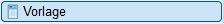
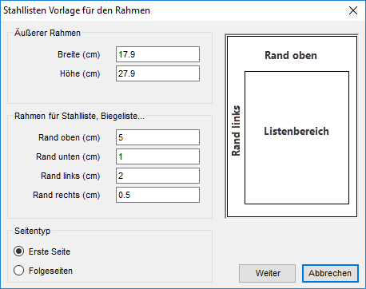
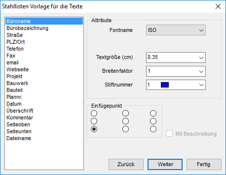
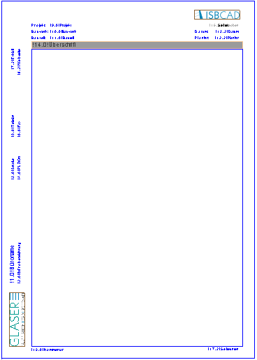
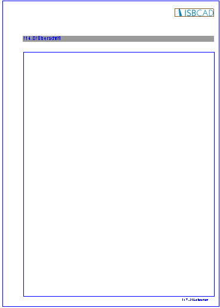
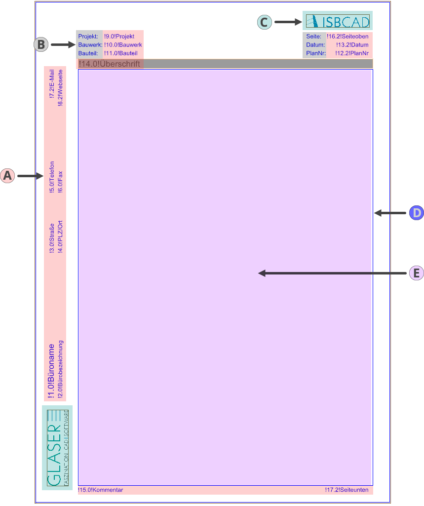
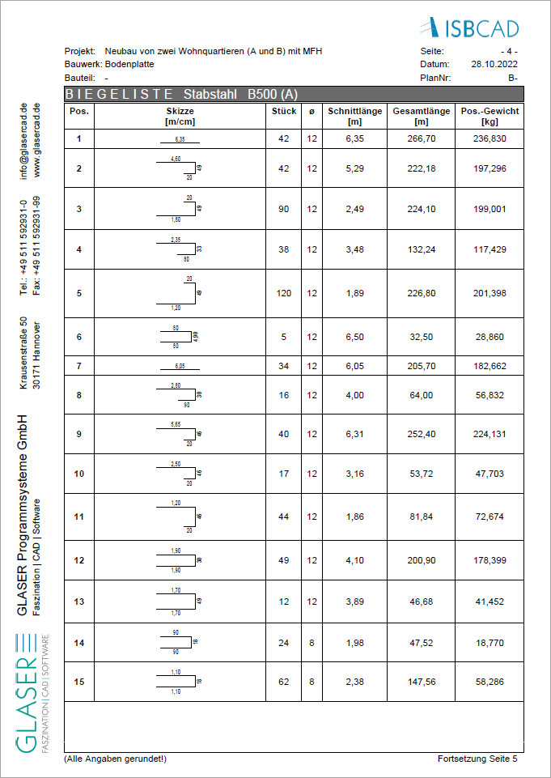

")
")
Gestalten von Vorlagen für die Ausgabe der Stahlliste. Öffnet den Dialog Stahllisten Vorlage für den Rahmen.
Vorbemerkungen
·Jede Listenart (z. B. Rundstahl-Stückliste oder Biegeliste) beginnt mit einer Startseite (Erste Seite). Für die Fortsetzung können optional Folgeseiten generiert werden. Ist kein Layout für Folgeseiten definiert, wird jede Seite im Layout der Startseite ausgegeben. Die Darstellung der Startseite und der Folgeseiten wird innerhalb derselben AKT-Zeichnung festgelegt.
·Die AKT-Vorlage wird im Unterdialog Grundwerte Allgemein im Dialogbereich Dateiname für Schablone ausgewählt. Im Dialogbereich Allgemein können Sie festlegen, welche Seiten und Textvariablen ausgegeben werden sollen. Siehe: Grundwerte Allgemein.
·Sie können die erstellte Vorlage öffnen und weiterbearbeiten, um individuelle Texte, Grafiken und Linien etc. hinzuzufügen. Mit [Konst 1 | Texte | zeichn] können Sie Textvariablen nachträglich ändern oder einfügen, indem Sie die Syntax einhalten. Wenn Sie den Listenbereich nachträglich vergrößern oder verkleinern möchten, dann nutzen Sie die Funktion [Konst 1 | Dehnen].
|
Tipps: |
|
·Im ISBCAD Konfigurationsordner (Config) befindet sich die AKT-Datei Template_STL.AKT, die standardmäßig als Vorlage für die Ausgabe der Stahlliste verwendet wird. Diese AKT-Datei kann als Ausgangspunkt für eigene Vorlagen dienen: Bearbeiten Sie die Datei nach Ihren Anforderungen und speichern Sie die angepasste Vorlage unter einem neuen Dateinamen an einem geeigneten Speicherort. ·Drucken Sie die Stahlliste nach der Vorlagenerstellung zur Probe mit einer ausreichend großen Anzahl an Stabstahl- und Mattenpositionen aus. So erkennen Sie, ob Änderungen an der Lage der Texte, an Breitenfaktoren oder anderen Parametern für die endgültige Gestaltung vorgenommen werden müssen. |

1.Seitenformat wählen und Listenbereich anpassen
§Geben Sie im Dialog die Abmessungen für die erste Seite der Stahllistenvorlage (Höhe, Breite) in Zentimetern an.
Achten Sie darauf, dass unter Seitentyp die richtige Option gewählt ist - Erste Seite. Das Layout für Folgeseiten können Sie im Anschluss definieren.
 |
§Definieren Sie die Randabstände der Seite und schließen Sie mit Weiter ab.
Der Dialog wird geschlossen.
§Legen Sie die Vorlage auf der Zeichnung mit einem Linksklick ab. [Lage].
Der Dialog Stahllisten Vorlage für die Texte wird geöffnet.
2.Textvariablen hinzufügen
§Wählen Sie einzelne Textvariablen und klicken Sie jeweils auf Weiter, um die Variablen abzulegen. [Lage].
Diese Texte werden automatisch mit den entsprechenden Angaben generiert.
 |
Was sind Textvariablen?Textvariablen sind Platzhalter, die bei der Ausgabe der Stahlliste mit Echtdaten gefüllt werden. Beispiel: Der Textvariable "Datum" ist der Text "12.10.2024" zugeordnet. Wenn Sie die Textvariable "Datum" in der Vorlage platzieren, wird die Textvariable bei der Ausgabe durch "12.10.2024" ersetzt. Um Seiten fortlaufend zu nummerieren, nutzen Sie die Textvariable "Seiteoben". Mit "Seiteunten" wird Listen, die sich über mehrere Seiten erstrecken, ein Vermerk angeschrieben, dass weitere Seiten folgen "Fortsetzung Seite x". Definition der TextvariablenWenn Sie Textvariablen übernehmen, werden bei der Ausführung die Inhalte aus verschiedenen Quellen verwendet: ·Aus den Systemdaten: Büroname, Bürobezeichnung usw. [Option | SysDat → Anschrift-Schriftfeld]. ·Aus dem Dialog Anschriften: Falls im Unterdialog [Grundwerte Allgemein | Allgemein | Anschriften] mehrere Anschriften angelegt wurden, wird die markierte Anschrift für die Ausgabe verwendet. ·Aus der Planbeschreibung: Projekt, Bauwerk, Datum usw. [Konst 3 | PlanBe]. |
§Um die Aktion abzuschließen, klicken Sie auf Fertig.
§Speichern Sie die Vorlage unter Angabe eines Dateinamens. Am besten in einem gesonderten Ordner für Stahllisten. [Datei | Speichern unter].
Um ein Layout für Folgeseiten zu erstellen
§Soll nach der ersten Seite die Folgeseite mit einem anderen Layout generiert werden, klicken Sie erneut auf die Schaltfläche [Option | StlLis | Vorlage].
§Wählen Sie unter Seitentyp die Option Folgeseiten, um auch diese in derselben Vorlagendatei zu gestalten.
§Gehen Sie wie bei der Erstellung der ersten Seite vor. Siehe oben "Schritt 1".
In einer AKT-Vorlage dürfen maximal zwei Layouts definiert sein (Erste Seite und Folgeseite)!
 |
 |
Layout: Erste Seite |
Layout: Folgeseite |
Individuell gestaltete Vorlage "Erste Seite":  |
PDF-Ausgabe:  |
Textvariablen |
|
freie Texte mit [Konst 1 | Texte | zeichn] eingefügt |
|
Grafiken eingefügt |
|
Rahmen für Stahlliste |
|
Listenbereich |
|
Zugehörige Aufgaben:
·Ausgabe der Stahllistenvorlage konfigurieren
Zugehörige Referenzen: